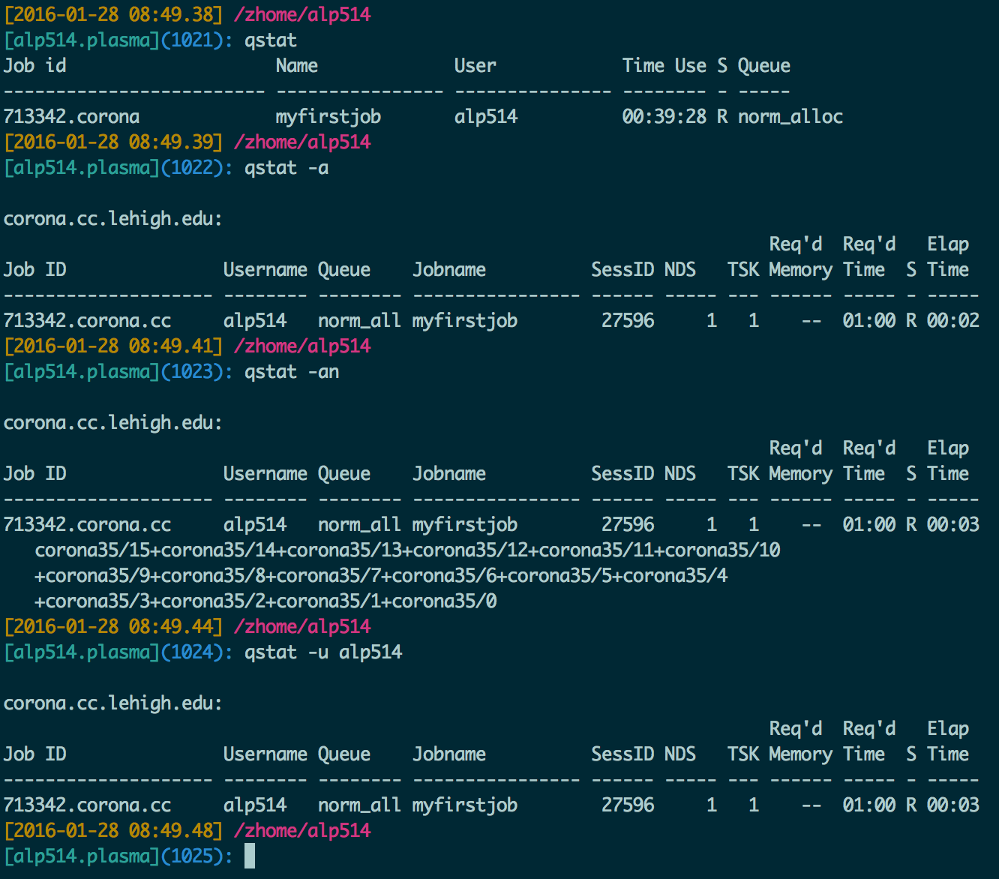

Who?
- Unit of Lehigh's Library & Technology Services within the Center for Innovation in Teaching & Learning
Our Mission
- We enable Lehigh Faculty, Researchers and Scholars achieve their goals by providing various computational resources; hardware, software, and storage; consulting and training.
Research Computing Staff
- Alex Pacheco, Manager & XSEDE Campus Champion
- Steve Anthony, HPC User Support & System Administrator
- Dan Brashler, Computing Consultant
- Mary Jo Schulze, Software Specialist
Introduction to Linux & HPC
Library & Technology Services
https://researchcomputing.lehigh.edu
About Us?
What do we do?
- Hardware Support
- Provide system administration and support for Lehigh's HPC clusters.
- 5 University owned and 4 Faculty owned
- Assist with purchase, installation and administration of servers and clusters.
- Provide system administration and support for Lehigh's HPC clusters.
- Data Storage
- Provide data management services including storing and sharing data.
- Software Support
- Provide technical support for software applications, install software as requested and assist with purchase of software.
- Training & Consulting
- Provide education and training programs to facilitate use of HPC resources and general scientific computing needs.
- Provide consultation and support for code development and visualization.
Research Computing Resources
Maia
- Free 32-core Symmetric Multiprocessor (SMP) system available to all Lehigh Faculty, Staff and Students
- dual 16-core AMD Opteron 6380 2.5GHz CPU
- 128GB RAM and 4TB HDD
- Theoretical Performance: 640 GFlops (640 billion floating point operations per second)
- Access: Batch Scheduled, no interactive access to Maia
\[ GFLOPs = cores \times clock \times \frac{FLOPs}{cycle} \]
Research Computing Resources
- Corona
- Lehigh's Flagship High Performance Computing Cluster
- 40 nodes, dual 8-core AMD Opteron 6128 2GHz CPU
- 32GB RAM and 1TB HDD
- 24 nodes, dual 8-core AMD Opteron 6128 2GHz CPU
- 64GB RAM and 2TB HDD,
- Infiniband QDR (40Gb/s) interconnect fabric.
- Theoretical Performance: 8.2TFlops (8.2 trillion Flops)
- Access: Batch scheduled, interactive on login node for compiling, editing only
- computer intensive tasks on the login node is strictly forbidden
Research Computing Resources
Trit
- Three SunFire x2270 Servers each with
- dual 4-core Intel Xeon X5570, 2.95GHz, 48GB RAM, 500GB HDD
- Theoretical Performance: 283.2GFlops
Capella
- One node, quad 4-core AMD Opteron 8384, 2GHz, 64GB RAM, 2x 146GB HDD
- Theoretical Performance: 128GFlops
Cuda0
- One node, 6-core Intel Xeon X5650, 2.66GHz, 24GB RAM, 200GB HDD
- 4 nVIDIA Fermi Devices (C2050, C2070, 2x M2070)
- Theoretical Performance: 63.840 GFlops (CPU) + 2.06 TFlops (GPU)
Access: Interactive (make sure that resources are available for your compute intensive tasks)
Faculty Owned Resources
- Eight nodes, dual 8-core Intel Xeon E5-2650v2, 2.6GHz, 64GB RAM
- Theoretical Performance: 2.662TFlops
- Twenty nodes, dual 8-core Intel Xeon E5-2650v2, 2.6GHz, 64GB RAM
- Theoretical Performance: 6.656TFlops
- Three nodes, dual 16-core AMD Opteron 6376, 2.3Ghz, 128GB RAM
- Theoretical Performance: 1.766TFlops
- Six nodes, dual 10-core Intel Xeon E5-2650v3, 2.3GHz, 64GB RAM, nVIDIA Tesla K80
- Theoretical Performance: 4.416 TFlops (CPU) + 17.46TFlops (GPU)
Apply for an account
Apply for an account at the LTS website
- Click on Services > Account & Password > Lehigh Computing Account > Request an account
- Click on the big blue button "Start Special Account Request" > Research Computing Account
- For Maia: click on "FREE Linux command-line computing"
- For other resources: click on "Fee-based research computing"
Annual charge of $50/account paid by Lehigh Faculty or Research Staff.
Annual charge of $450 for one node-year of computing access, also know as allocation block
- continous computing on one node of Corona for one year
- 140,160 hours on one cpu
- paid for by your account sponsor
- Free access to Corona at low priority after allocation is expended
Accessing Research Computing Resources
- All Research Computing resources are accessible using ssh while on Lehigh's network
- Corona:
ssh username@corona.cc.lehigh.edu - Capella:
ssh username@capella.cc.lehigh.edu - Cuda0:
ssh username@cuda0.cc.lehigh.edu - Trit{1,2,3}:
ssh username@trit{1,2,3}.cc.lehigh.edu - Maia: No direct access to Maia, instead login to the polaris
- Polaris:
ssh username@polaris.cc.lehigh.edu- Polaris is a gateway that also hosts the batch scheduler for Maia.
- No computing software including compilers is available on Polaris.
- Login to Maia to request computing time on Maia including interactive access to Maia.
- If you are not on Lehigh's network, login to the ssh gateway to get Research Computing resources.
ssh username@ssh.cc.lehigh.edu
What about Storage resources
- LTS provides various storage options.
- Some of these are in the cloud and subject to Lehigh's Cloud Policy
- For research, LTS provides a 1PB storage system called Ceph
- Ceph is based on the Ceph software
- Research groups can purchase a project space on Ceph @ $200/TB/year that can be shared
- Ceph is in-house, built, operated and administered by LTS Research Computing Staff.
- located in Data Center in EWFM with a backup cluster in Packard Lab
- HPC users can write job output directly to their Ceph volume
- Ceph volume can be mounted as a network drive on Windows or CIFS on Mac and Linux
- See Ceph FAQ for more details
- HPC User home directory quota
- Maia: 5GB
- Other Clusters: 150GB shared between Corona, Capella, Cuda and Trits
How do I get started using HPC resources for this course
Login to plasma:
ssh -X username@plasma.cc.lehigh.edu- Plasma is a login host exclusive to Department of Chemistry for interactive access with X-Forwarding
- You will need the X-Forwarding for visualizing output from software, Gaussian and Quantum Espresso
- If you are using a Windows PC, download and install MobaXterm from https://software.lehigh.edu
- If you are using a Mac, download and install XQuartz from http://www.xquartz.org/
Linux is the Operating System installed on all HPC resources.
- You should see something like
[alp514@plasma ~]$if you are logged into plasma - This is known as the command prompt
- You should see something like
Directory Structure
- All files are arranged in a hierarchial structure, like an inverted tree.
- The top of the hierarchy is traditionally called root (written as a slash / )

Relative & Absolute Path
- Path means a position in the directory tree.
- You can use either the relative path or absolute path
- In relative path expression
- (one dot or period) is the current working directory
- (two dots or periods) is one directory up
- You can combine . and .. to navigate the le system hierarchy.
- the path is not de ned uniquely and does depend on the current path.
- is unique only if your current working directory is your home directory.
- In absolute path expression
- the path is de ned uniquely and does not depend on the current path
- /tmp is unique since /tmp is the abolute path
Some Linux Terms (also called variables)
- HOME : Your Home Directory on the system, /home/username
- This is where you should be when you login the first time
- Don't believe me, type
pwdand hit enter
- PATH : List of directories to search when executing a command
- Enter
avogadroat the command prompt - You should see an error saying
command not found
- Enter
Linux Commands
pwd: print working directory, gives the absolute path of your current location in the directory hierarchycd dirname: change to folder calleddirname- If you omit directory name, you will end up in your home directory
- Enter
cd /share/ceph/hej213chm488/.
mkdir dirname: create a directory calleddirname- Create a directory replacing dirname with your username and cd to that directory (This is the location where you will save all your work for this course.)
- I would enter the command
mkdir alp514followed bycd alp514 - Use the
pwdcommand to check your current location
cp file1 file2: command to copy file1 to file2- You can use absolute or relative path for the source and destination
cp ../file . - If you need to copy over a directory and its contents, add a
-r flag cp -r ../alp514/examples .
- You can use absolute or relative path for the source and destination
Linux Command (contd)
rm file1: delete a file called file1- Unlike other OS's, once you delete a file it cannot be deleted.
ls: list contents of current directory- If you provide a directory path as an argument, then the contents of that directory will be listed
echo: prints whatever follows to the screenecho $HOME: prints the contents of the variable HOME i.e. your home directory to the screen
File Editing
- The two most commonly used editors on Linux/Unix systems are:
- vi or vim (vi improved)
- emacs
- vi/vim is installed by default on Linux/Unix systems and has only a command line interface (CLI).
- emacs has both a CLI and a graphical user interface (GUI).
- Other editors that you may come across on *nix systems
- kate: default editor for KDE.
- gedit: default text editor for GNOME desktop environment.
- gvim: GUI version of vim
- pico: console based plain text editor
- nano: GNU.org clone of pico
- kwrite: editor by KDE.
vi commands
| Inserting/Appending Text | Command |
|---|---|
| insert at cursor | i |
| insert at beginning of line | I |
| append after cursor | a |
| append at end of line | A |
| newline after cursor in insert mode | o |
| newline before cursor in insert mode | O |
| append at end of line | ea |
| exit insert mode | ESC |
| Cursor Movement | Command |
|---|---|
| move left | h |
| move down | j |
| move up | k |
| move right | l |
| jump to beginning of line | ^ |
| jump to end of line | $ |
| goto line n | nG |
| goto top of file | 1G |
| goto end of file | G |
| move one page up | CNTRL-u |
| move one page down | CNTRL-d |
vi commands
| File Manipulation | Command |
|---|---|
| save file | :w |
| save file and exit | :wq |
| quit | :q |
| quit without saving | :q! |
| delete a line | dd |
| delete n lines | ndd |
| paste deleted line after cursor | p |
| paste before cursor | P |
| undo edit | u |
| delete from cursor to end of line | D |
| File Manipulation | Command |
|---|---|
| replace a character | r |
| join next line to current | J |
| change a line | cc |
| change a word | cw |
| change to end of line | c$ |
| delete a character | x |
| delete a word | dw |
| edit/open file | :e file |
| insert file | :r file |
Software available on HPC systems
- Most software is installed in /zhome/Apps
- Software is managed using module environment
- Why? We may have different versions of same software or software built with different compilers
- Module environment allows you to dynamically change your *nix environment based on software being used
- Standard on many University and national High Performance Computing resource since circa 2011
Software on Corona

How does module work?
module avail: show list of software available on resourcemodule load abc: add softwareabcto your environmentmodule unload abc: removeabcfrom your envionmentmodule swap abc1 abc2: swapabc1withabc2in your environmentmodule purge: remove all modules from your environmentmodule show abc: display what variables are added or modified in your environment
Installed Software
- Chemistry/Materials Science
- Gaussian
- VASP
- Computational Fluid Dynamics
- Abaqus
- Ansys
- Comsol
- OpenFOAM
- Math
- Maple
- Mathematica
- Matlab
- Molecular Dynamics
- GROMACS
- LAMMPS
- Scripting Languages
- R
- Python
- Compilers
- GNU
- Intel
- PGI
- Parallel Programming
- OpenMPI
More Software
Libraries
- FFTW
- Intel MKL
- Magma
- Scalapack
- HDF5
- NetCDF
Other Tools
- CMake
- Gams
- GaussView
- Gurobi
- You can always install a software in your home directory
- Stay compliant with software licensing
- Modify your .bashrc/.tcshrc to add software to your path, OR
- create a module and dynamically load it so that it doesn't interfere
with other software installed on the system
- e.g. You might want a different version of openmpi installed
- the system admin may not want install it system wide for just one user
- Add the directory where you will install the module files to the variable MODULEPATH in .bashrc/.tcshrc
# My .bashrc file
export MODULEPATH=${MODULEPATH}:/zhome/alp514/modulefiles
Module File Example

Software for this course
Quantum Chemistry Software (module key)
- Gaussian (gaussian09)
- Quantum Espresso
Visualization Software
- Avogadro (avogadro/1.1.1)
- GaussView (gview)
Exercise
- Use Avogadro to create a small molecule
module load avogadro/1.1.1
- Obtain it's equilibrium geometry and vibrational spectra
- Use Avogadro to create a small molecule
Available Queues
- Maia
| Queue Name | Max Walltime | Max Simultaneous Core-hours |
|---|---|---|
| smp-test | 1 hour | 4 core hours |
| smp | 96 hours | 384 core hours |
- Corona
| Queue Name | Max Walltime | Max Simultaneous Core-hours | Notes |
|---|---|---|---|
| p-ib | 96/72 | No Limit/288 | Min 2 nodes/job, Max 24 nodes/user |
| normal | 96/72 | 26880/7680 | Max 34 nodes/user |
| short | 24/12 | 384/192 | |
| bf | 96 | Max 65 nodes/user |
How to run jobs on Maia/Corona
- Write a PBS submit script
- need to have some background in shell scripting (bash/tcsh)
- Need to specify
- Resources required (which depends on configuration)
- number of nodes
- number of processes per node
- memory per node
- How long do you want the resources
- have an estimate for how long your job will run
- Which queue to submit jobs
- Resources required (which depends on configuration)
Minimal submit script for Serial Jobs on Maia
#!/bin/bash
#PBS -q smp
#PBS -l walltime=1:00:00
#PBS -l nodes=1:ppn=1
#PBS -l mem=4GB
#PBS -N myjob
cd ${PBS_O_WORKDIR}
./myjob < filename.in > filename.out
exit
Minimal submit script for MPI Jobs on Corona
#!/bin/bash
#PBS -q p-ib
#PBS -l walltime=1:00:00
#PBS -l nodes=2:ppn=16
#PBS -N myjob
module load openmpi/1.8/intel/14.0.1
NPROCS=$(wc -l ${PBS_NODEFILE} | awk '{print $1}')
cd ${PBS_O_WORKDIR}
mpirun -np ${NPROCS} -machinefile ${PBS_NODEFILE} ./myjob < filename.in > filename.out
exit
Minimal submit script for OpenMP Jobs on Corona
#!/bin/tcsh
#PBS -q normal
# Directive with same flags can be combined on one line
#PBS -l walltime=1:00:00,nodes=1:ppn=16
#PBS -N myjob
cd ${PBS_O_WORKDIR}
# Use either
setenv OMP_NUM_THREADS 16
./myjob < filename.in > filename.out
# OR
OMP_NUM_THREADS=16 ./myjob < filename.in > filename.out
exit
Useful PBS Directives
#PBS -q queuename | Submit job to the queuename queue. |
#PBS -l walltime=hh:mm:ss | Request resources to run job for hh hours, mm minutes and ss seconds. |
#PBS -l nodes=m:ppn=n | Request resources to run job on n processors each on m nodes. |
#PBS -l mem=xGB | Request xGB per node requested, applicable on Maia only |
#PBS -N jobname | Provide a name, jobname to your job. |
#PBS -o filename.out | Write PBS standard output to file filename.out. |
#PBS -e filename.err | Write PBS standard error to file filename.err. |
#PBS -j oe | Combine PBS standard output and error to the same file. |
#PBS -m status | Send an email after job status status is reached. status can be a (abort), b (begin) or e (end) The arguments can be combined, for e.g. abe will send email when job begins and either aborts or ends |
#PBS -M your email address | Address to send email. |
Useful PBS environmental variables
PBS_O_WORKDIR | Directory where the qsub command was executed |
PBS_NODEFILE | Name of the file that contains a list of the HOSTS provided for the job |
PBS_JOBID | Job ID number given to this job |
PBS_QUEUE | Queue job is running in |
PBS_WALLTIME | Walltime in secs requested |
PBS_JOBNAME | Name of the job. This can be set using the -N option in the PBS script |
PBS_ENVIRONMENT | Indicates job type, PBS_BATCH or PBS_INTERACTIVE |
PBS_O_SHELL | value of the SHELL variable in the environment in which qsub was executed |
PBS_O_HOME | Home directory of the user running qsub |
Submitting & Monitoring Jobs
| Command | Description |
|---|---|
qsub filename | Submit filename to job scheduler |
qstat | check job status (all jobs) |
qstat -u username | check job status of user username |
qstat -a | More information than that given by qstat |
qdel jobid | Cancel your job identified by jobid |
showstart jobid | Show estimated start time of job identified by jobid |
checkjob jobid | Check status of your job identified by jobid |
qhold jobid | Put your job identified by jobid on hold |
qrls jobid | Release the hold that you put on jobid |
Exercise (contd)
- Write a submit script
#!/bin/bash
#PBS -q normal
#PBS -l nodes=1:ppn=16
#PBS -l walltime=1:00:00
#PBS -N myfirstjob
#PBS -m abe
#PBS -M alp514@lehigh.edu
# Load gaussian module to get g09 in your path
module load gaussian09
# cd to directory where you saved the input file
cd ${PBS_O_WORKDIR}
# Run gaussian
g09 < butane.com > butane.log
Exercise (contd)
- Submit the job
qsub myjob.pbs - Monitor your job using
qstat,showstartandcheckjobcommands - Check your email for notification
- When job start
- When job aborts or complete
- Analyze output using Avogadro
Job Monitoring

Job Monitoring